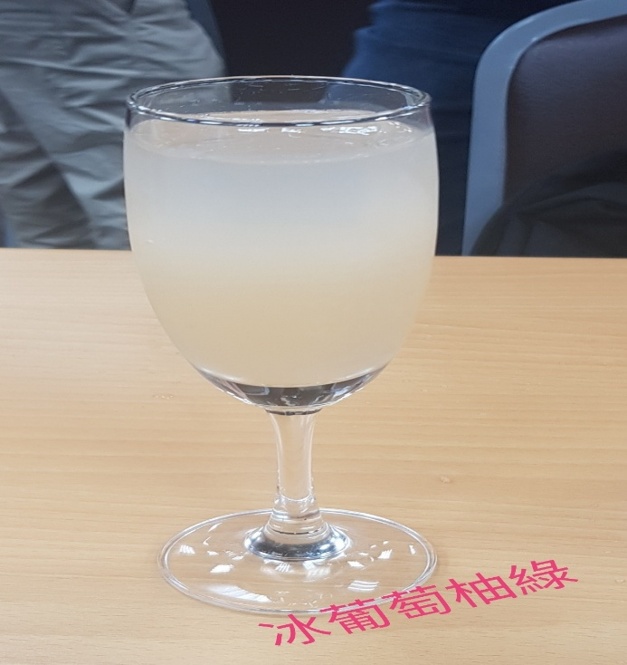

冰葡萄柚綠

材料
半顆甜橙(約50ml-60ml)榨汁
綠茶3克，水100~120ml(4分鐘)冰鎮~冷卻
蜂蜜10ml~15ml
糖漿10ml
做法
葡萄柚榨汁，綠茶3克加水100ml (4分鐘)冷卻-冰鎮。
把作法1加入蜂蜜10ml-15ml，糖漿10ml再放入少許冰塊。
index
鮮蝦沙拉佐蒜味優格
法式經典洋蔥湯
心得報告
Your browser does not support the audio element.
Your browser does not support the video tag.